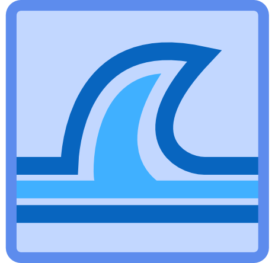
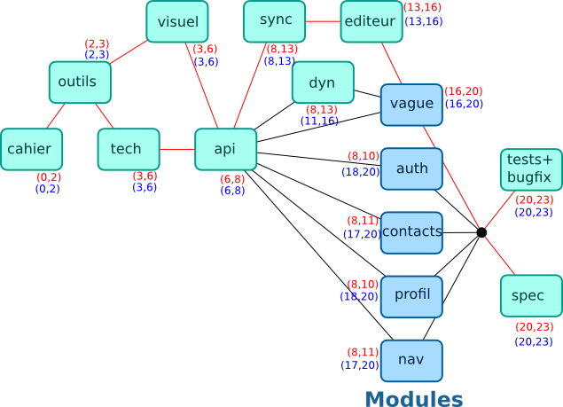
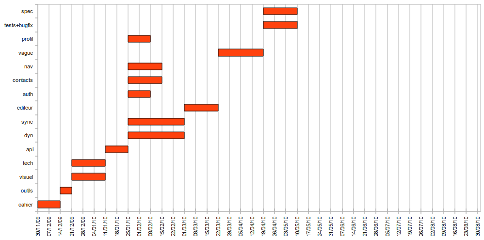

Projet tutoré Tsunami
par Renaudeau Gaëtan et Nicolae Namolovan

Sommaire
- But de notre projet
- Fonctionnalités du projet
- Intérêts du projet
- Organisation
- Conclusion
But de notre projet
- Application collaborative permettant à des utilisateurs distants de partager et d'éditer des documents en même temps.
- Utiliser les dernières technologies standards du web pour réaliser une application dynamique.
- Offrir une alternative plus légère face à Google Wave.
Fonctionnalités du projet
- Le mode déconnecté
- L'inscription
- Connexion / Déconnexion
- récupération du mot de passe
- L'application
- La liste de contacts
- La liste de vagues
- La vague
- La gestion du profil
- L'administration
Fonctionnalités du projet
L'inscription
Fonctionnalités du projet
Connection / Déconnection
Fonctionnalités du projet
Récupération du mot de passe
Fonctionnalités du projet
La liste de contacts
Fonctionnalités du projet
La liste de vagues
(video)
Fonctionnalités du projet
La vague
(video)
Fonctionnalités du projet
La gestion du profil
(video)
Intérêt du projet
- La découverte de frameworks (Play, jQuery) et des standards du web (HTML 5, CSS 3, javascript, ...)
- La gestion du temps réel et la synchronisation
Organisation
Répartition des tâches
- Nicolae s'est chargé de l'architecture technique (déploiements, ..) et de toute la dimension "temps réel" de notre application. Ainsi, il s'est chargé de connecter les modules javascript au système de synchronisation.
- Gaëtan s'est occupé du design (CSS 3), du serveur web (modèles, vues, controlleurs) et de modules javascript tels que la liste de contacts ou la liste des vagues. Contribution plus active à la documentation et organisation des taches.
Organisation
Diagramme de PERT

Organisation
Diagramme de GANTT

Conclusion
Le but de notre projet s'été de permettre aux utilisateurs d'éditer sur le web des documents d'une façon instantanée et collaborative.
Toutes les actions faites par un utilisateur devraient être visibles aux autres utilisateurs, le plus rapide possible.